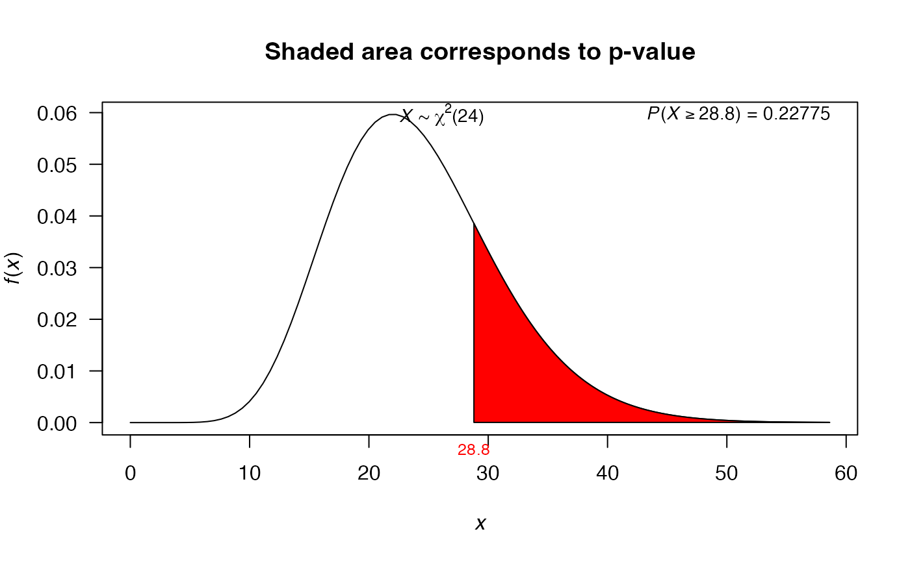

Variance test using values
var_test.RdThis function performs the test for a single variance or two variances using values, not the vectors.
var_test( varx, nx, vary = NULL, ny = NULL, alternative = "two.sided", null.value = 1, conf.level = 0.95 )
Arguments
| varx | sample variance for sample x. |
|---|---|
| nx | sample size for sample x. |
| vary | sample variance for sample y. |
| ny | sample size for sample y. |
| alternative | a character string specifying the alternative
hypothesis, must be one of |
| null.value | the hypothesized number (variance or ratio of the variances) in the null hypothesis. |
| conf.level | confidence level of the interval, by default its value is 0.95. |
Value
A list with class htest containing the following
components:
the value of the statistic.
the p-value for the test.
a confidence interval for the variance.
the sample variance (or ratio of the sample variances)
the specified hypothesized value for alternative hypothesis.
a character string describing the alternative hypothesis.
a character string indicating the type of test performed.
Examples
# Examples with ONE sample # Example 7.7.1 from Wayne (2013), http://tinyurl.com/y6z49hrw var_test(varx=670.81, nx=16, null.value=600, alternative='two.sided')#> #> X-squared test for variance #> #> data: varx = 670.81 and nx = 16 #> X-squared = 16.77, df = 15, p-value = 0.6656 #> alternative hypothesis: true variance is not equal to 600 #> 95 percent confidence interval: #> 366.0509 1606.8235 #> sample estimates: #> variance of x #> 670.81 #># Exercise 7.7.5 from Wayne (2013), http://tinyurl.com/y6z49hrw var_test(varx=30, nx=25, null.value=25, alternative='greater')#> #> X-squared test for variance #> #> data: varx = 30 and nx = 25 #> X-squared = 28.8, df = 24, p-value = 0.2277 #> alternative hypothesis: true variance is greater than 25 #> 95 percent confidence interval: #> 0.00000 51.99147 #> sample estimates: #> variance of x #> 30 #># Using the plot to illustrate Hypothesis Test mytest1 <- var_test(varx=30, nx=25, null.value=25, alternative='greater') mytest1#> #> X-squared test for variance #> #> data: varx = 30 and nx = 25 #> X-squared = 28.8, df = 24, p-value = 0.2277 #> alternative hypothesis: true variance is greater than 25 #> 95 percent confidence interval: #> 0.00000 51.99147 #> sample estimates: #> variance of x #> 30 #>plot(mytest1)# Examples with TWO samples # Example 7.8 from Montgomery (1996) var_test(varx=5.1^2, nx=12, vary=4.7^2, ny=15, conf.level=0.90)#> #> F test to compare two variances #> #> data: varx = 26.01 , nx = 12 , vary = 22.09 and ny = 15 #> F = 1.1775, num df = 11, denom df = 14, p-value = 0.7605 #> alternative hypothesis: true ratio of variances is not equal to 1 #> 90 percent confidence interval: #> 0.4589581 3.2246374 #> sample estimates: #> ratio of variances #> 1.177456 #># Example 8.17 from Montgomery (1996) mytest2 <- var_test(varx=3.84, nx=20, vary=4.54, ny=20) mytest2#> #> F test to compare two variances #> #> data: varx = 3.84 , nx = 20 , vary = 4.54 and ny = 20 #> F = 0.84581, num df = 19, denom df = 19, p-value = 0.7189 #> alternative hypothesis: true ratio of variances is not equal to 1 #> 95 percent confidence interval: #> 0.3347839 2.1369100 #> sample estimates: #> ratio of variances #> 0.845815 #>plot(mytest2)